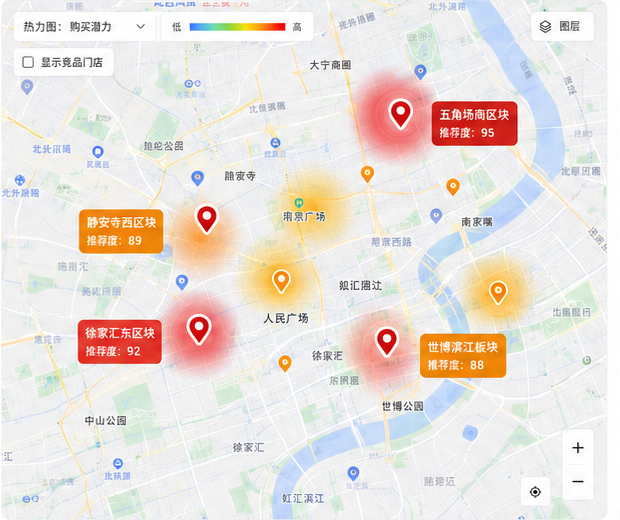

登录 HMSI
快乐猴选址规划决策工作台
快乐猴选址规划决策工作台
项目流转、风险与责任人一页掌握
| 项目 | 阻塞项 | 责任人 | 截止 |
|---|
| 门店 | 预测 | 实际 | 偏差 |
|---|
综合参考区间取各方法的共同有效范围，不能替代租赁、工程和合规审核。
| 区域名称 | 区域排名 | 预测日均商品销售额区间 | 置信状态 | 数据完整度 | 当前阶段 | 阶段性结论 | 操作 |
|---|

居住人口居住人口与家庭客群基础较好，强竞对分布可控，店型匹配度较高。
租金、工程条件、可视性与动线、物流卸货、消防与政策风险。
| 状态 | 候选点 | 阶段 | 区间 |
|---|
依据：区间稳定，物业与物流已通过。
未决：租赁递增条款 | 张三 | 5/24依据：家庭客群和需求基础较强。
未决：排烟、卸货 | 李四 | 5/23依据：竞争压力较高，门头可视性待核验。
未决：门头、平面图 | 王五 | 5/25销售潜力最高，不等于最终优先。工程、物流或合规红线未通过时，不得进入签约建议。
| 负责人 | 执行日期 | 路线 | 物料 | 反馈 | 状态 |
|---|
让有限资源优先覆盖高购买潜力和高渗透潜力社区，提高覆盖效率。